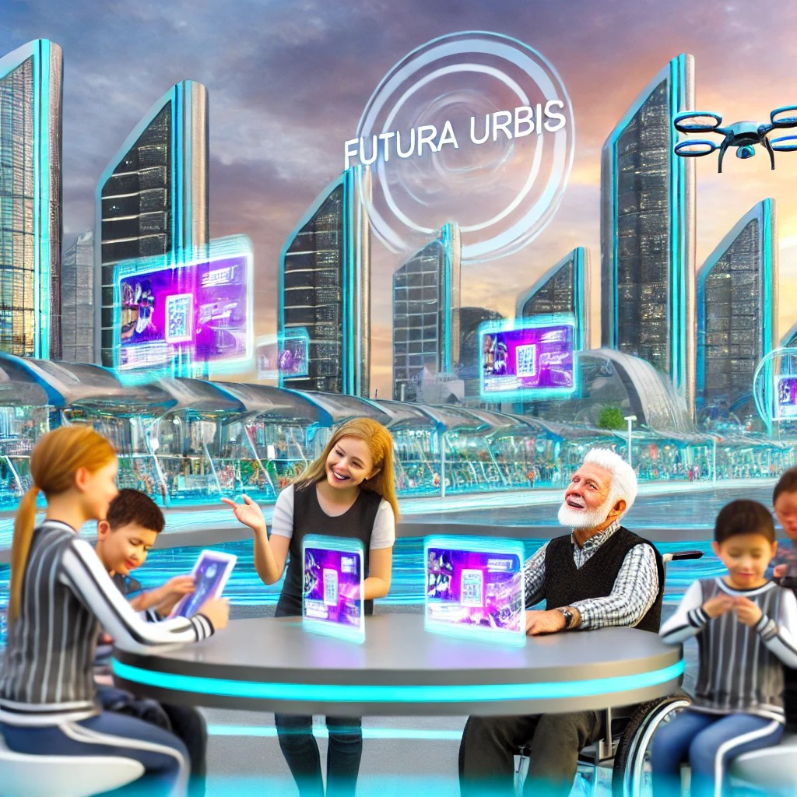
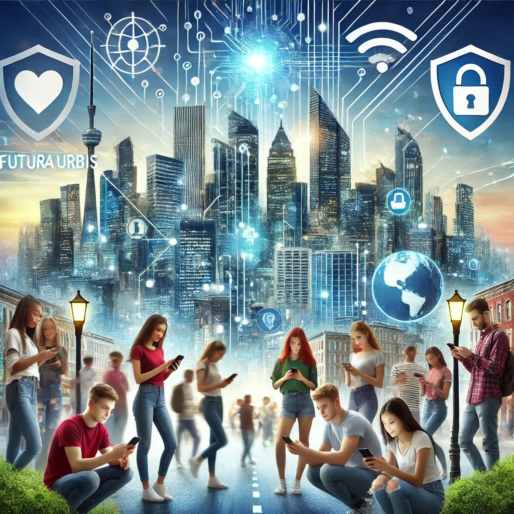

Internet y Ciudadanía Digital
¡Ciudadanos de Futura Urbis!
El futuro de nuestra ciudad está en nuestras manos. Internet y la tecnología nos permiten ser protagonistas de un cambio que hará de Futura Urbis un lugar más inclusivo, transparente y conectado.
Imagina una ciudad donde:
- Tú participas en las decisiones que afectan a tu comunidad.
- La información es accesible y la gestión pública es transparente.
- Todos tienen voz y nadie se queda atrás gracias a la inclusión digital.
Únete hoy a la transformación digital de Futura Urbis. ¡Tú eres la clave para hacer de nuestra ciudad un espacio más fuerte y conectado!
Técnicos de Conexión Digital
Imagina vivir en Futura Urbis, una ciudad futurista donde la conectividad digital es esencial. Como futuros técnicos, ustedes tienen la oportunidad de asegurar que cada hogar esté conectado de manera segura y eficiente. A través de este proyecto, aprenderán a configurar redes, resolver problemas de conectividad y proteger la privacidad de los ciudadanos.
Su trabajo no solo facilitará el acceso a Internet, sino que también ayudará a construir una sociedad más inclusiva y digitalmente avanzada. Cada solución que implementen hará una diferencia real, acercándolos al futuro de la tecnología y la innovación. ¡Es el momento de ser los héroes digitales de Futura Urbis!
Conectando Generaciones
Vivimos en una era donde la tecnología conecta personas y abre puertas a un sinfín de oportunidades. Sin embargo, para muchas personas mayores, este mundo digital puede resultar confuso, creando una brecha que les impide aprovechar sus beneficios. En Futura Urbis, creemos que la tecnología debe ser inclusiva, y Conectando Generaciones tiene como objetivo reducir esa brecha, permitiendo que nuestros mayores aprendan a utilizar herramientas digitales y se sientan parte de la sociedad tecnológica.

Este proyecto no solo proporcionará a las personas mayores habilidades digitales, sino que también fomentará la interacción intergeneracional. Los estudiantes tendrán la oportunidad de convertirse en mentores, enseñando a las personas mayores y experimentando el valor de la empatía y la inclusión. Juntos, construiremos una Futura Urbis más conectada, donde la tecnología une a todas las generaciones.
Uso Responsable del Móvil
En Futura Urbis, una ciudad donde la tecnología lo transforma todo, los jóvenes están más conectados que nunca. El móvil es una herramienta poderosa que abre puertas al conocimiento y la comunicación, pero también puede traer riesgos como la distracción, el ciberacoso o la desinformación si no se usa de manera responsable.

Este proyecto te brinda la oportunidad de ser más que un usuario de tecnología: te invita a convertirte en un líder que promueva el uso consciente del móvil en tu comunidad. Con tus ideas y creatividad, podrás protegerte a ti mismo y a los demás, marcando una diferencia en la forma en que Futura Urbis afronta los retos digitales. ¡Es el momento de ser parte del cambio y contribuir a un futuro digital más seguro para todos!